DEMETRA-SEALS-InVEST
Workflow Walkthrough
Overview
This walkthrough guides you through installing, configuring, and running the DEMETRA-SEALS-InVEST workflow. SEALS (Spatial Economic Allocation Landscape Simulator) integrates with InVEST (Integrated Valuation of Ecosystem Services and Tradeoffs) to model land-use change scenarios and their ecosystem service impacts.
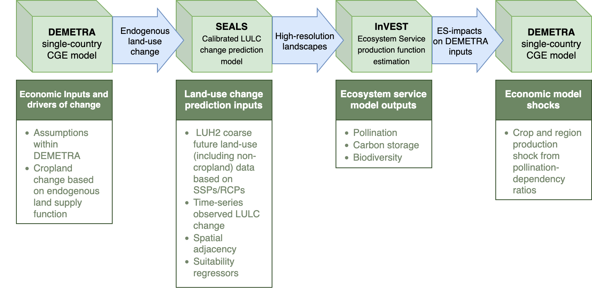
Installation
For complete details, see Justin Johnson’s installation guide.
Before beginning, ensure you have:
- Git - Download here
- Miniforge3 (Python distribution) - Download here
Hazelbean is the core dependency for running SEALS. Install it with these commands:
# Initialize conda (may not be needed depending on your shell configuration)
conda init
# Create a new environment (replace 'seals_env' with your preferred name)
conda create -n seals_env
# Activate the environment
conda activate seals_env
# Install Hazelbean
mamba install hazelbeanNote: The mamba install hazelbean command may take 5-10 minutes to complete.
SEALS Repository Installation
Windows Users - Choose One Option:
Option 1: Download from Visual Studio Build Tools and select “Download Build Tools”
Option 2: Use winget command:
winget install Microsoft.VisualStudio.2022.BuildTools --force --override "--passive --wait --add Microsoft.VisualStudio.Workload.VCTools;includeRecommended"Option 3: Run the
install.batfile from the Earth Economy Devstack repository root (executes the winget command above)
Mac/Linux Users:
Most users will already have Xcode installed. If not:
xcode-select --installThis installs Xcode Command Line Tools including gcc and clang compilers.
Clone the repository to your local machine:
git clone https://github.com/jandrewjohnson/seals_devRecommended location: C:/Users/<username>/Files/seals/seals_dev (Windows) or /Users/<username>/Files/seals/seals_dev (Mac/Linux)
# Activate your conda environment
conda activate seals_env
# Navigate to the cloned repository
cd C:/Users/<username>/Files/seals/seals_dev
# Install as editable package
pip install -e . --no-depsData Setup
File Organization Structure
SEALS uses a specific directory structure to locate data automatically:
Additional InVEST data
<home>/Files/base_data/global_invest/
<home>/Files/base_data/crops/Project Data (Country/Region-Specific)
Additional country data
<home>/Files/seals/projects/run_ken_demetra/This includes:
- Region border files (shapefiles and raster GeoTIFFs)
- DEMETRA shock files (CSV)
- Downscaling coefficient files (CSV and global rasters)
- Scenario configuration files
Testing SEALS
Standard Test Run
This basic test verifies your installation is working correctly.
Steps:
Locate
run_seals_standard.pyinseals_dev/seals/Ensure your conda environment is activated:
conda activate seals_envRun the script:
python run_seals_standard.pyCheck for output in:
<home>/Files/seals/projects/standard_<timestamp>/intermediate/visualization/lulc_pngs/
Expected Output: You should see land-use/land-cover (LULC) maps like:
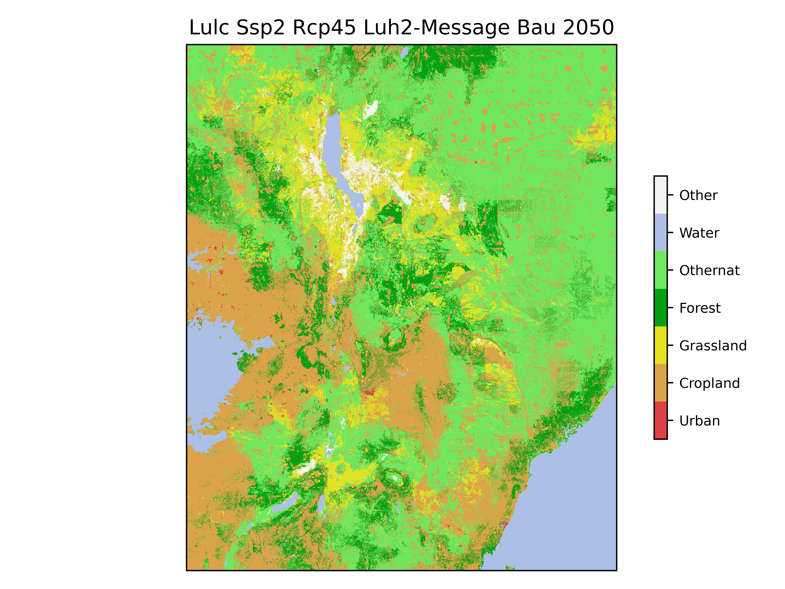
Common Issues
Problem: ValueError: Could not open... error on first run
Solution: The base_data download likely didn’t complete. Run the script again now that base_data is fully downloaded.
Kenya DEMETRA Scenario
This scenario demonstrates land-use change modeling for Kenya using DEMETRA economic shocks.
Key Input Files
Scripts:
- Main execution script:
run_ken_demetra.py
Data Files:
| File | File Type | Location |
|---|---|---|
| Scenario Configuration | ken_scenarios_full.csv |
projects/run_ken_demetra/ |
| Default Downscaling Coefficients | CSV files + Global rasters | base_data/seals/static_regressors base_data/seals/default_inputs |
| DEMETRA Shocks | CSV files | projects/run_ken_demetra/inputs/demetra_shocks |
| Regional Borders | Shapefiles + Raster GeoTIFFs | projects/run_ken_demetra/inputs/borders |
| Project Downscaling Coefficients | CSV files + Global rasters | projects/run_ken_demetra/inputs/static_regressors projects/run_ken_demetra/inputs/coefficients |
Note: The structure is flexible, but ensure that the paths defined in the scenario CSV and coefficients CSV are properly defined.
Running the Kenya Scenario
conda activate seals_env
cd seals_dev/seals/
python run_ken_demetra.pyUnderstanding the Task Tree
When you run run_ken_demetra.py, SEALS creates a ProjectFlow object that executes a series of tasks in a hierarchical tree structure. Each task creates outputs in the intermediate/ directory.
Task Hierarchy
For reference, here’s the complete task tree as shown in the console output:
execute
├── project_aoi
├── fine_processed_inputs
│ ├── generated_kernels
│ ├── lulc_clip
│ ├── lulc_simplifications
│ ├── lulc_binaries
│ └── lulc_convolutions
├── coarse_change
│ ├── coarse_extraction
│ ├── coarse_simplified_proportion
│ ├── coarse_simplified_ha
│ └── coarse_simplified_ha_difference_from_previous_year
├── regional_change
├── allocations
│ └── allocation_zones
│ └── allocation
├── stitched_lulc_simplified_scenarios
├── visualization
│ └── lulc_pngs
├── reproject_lulc_rasters_to_equal_area
├── run_invest_carbon
├── run_invest_pollination
├── calculate_crop_value_and_shock
├── calculate_biodiversity_index
└── summarize_and_visualize_multi_vectorEach task is explained in detail below.
Task-by-Task Walkthrough
1. Project AOI (Area of Interest)
Significance: Defines the geographic boundary for the analysis and creates resolution pyramids for efficient processing at multiple scales.
What it does:
- Loads the area of interest boundary for Kenya from the input shapefile
- Creates a vector geopackage (
.gpkg) file for the AOI - Generates raster “pyramids” at different resolutions:
- Fine resolution: Matches the base LULC data (typically 300m)
- Coarse resolution: Matches the coarse projection data (typically 0.25°)
Input files:
- Region shapefile from
projects/run_ken_demetra/inputs/borders
Output files:
intermediate/project_aoi/
├── aoi_KEN.gpkg # Vector boundary
└── pyramids/
├── aoi_ha_per_cell_coarse.tif # Coarse resolution (hectares per cell)
└── aoi_ha_per_cell_fine.tif # Fine resolution (hectares per cell)Significance:
- The AOI defines the study region
- Can use default global country shapefile or project-specific
- Pyramids allow multi-scale analysis
- Fine resolution preserves local detail
- Coarse resolution matches global projections
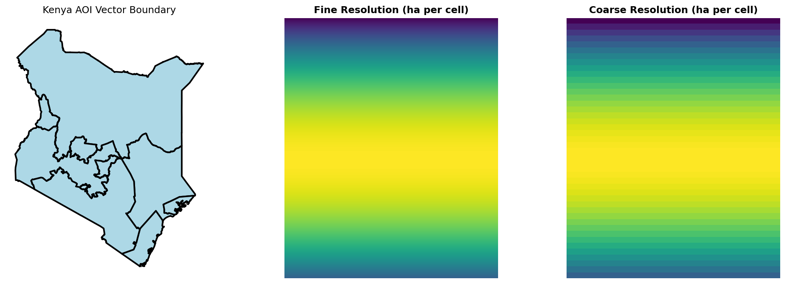
2. Fine Processed Inputs
Significance: Prepares the baseline land-use/land-cover (LULC) data for allocation by simplifying classifications, creating binary masks, and generating spatial convolutions.
What it does:
- Generated Kernels: Creates Gaussian kernels for spatial smoothing
- LULC Clip: Clips global LULC data to the Kenya AOI
- LULC Simplifications: Reclassifies detailed ESA categories into 7 SEALS classes:
- Cropland
- Forest
- Grassland
- Urban
- Water
- Other natural (othernat)
- Other
- LULC Binaries: Creates separate binary masks for each class (1 = present, 0 = absent)
- LULC Convolutions: Applies Gaussian smoothing to capture neighborhood characteristics
Key Output Structure:
intermediate/fine_processed_inputs/
├── generated_kernels/
│ ├── gaussian_1.tif # Small neighborhood kernel
│ └── gaussian_5.tif # Large neighborhood kernel
├── lulc/esa/
│ ├── lulc_esa_2020.tif # Original ESA LULC
│ └── seals7/
│ ├── lulc_esa_seals7_2020.tif # Simplified 7-class LULC
│ ├── binaries/2020/ # Binary masks by class
│ │ ├── binary_esa_seals7_2020_cropland.tif
│ │ ├── binary_esa_seals7_2020_forest.tif
│ │ └── ...
│ └── convolutions/2020/ # Smoothed neighborhood data
│ ├── convolution_esa_seals7_2020_cropland_gaussian_1.tif
│ ├── convolution_esa_seals7_2020_cropland_gaussian_5.tif
│ └── ...Significance:
- Simplification reduces complexity while preserving key land-use patterns
- Binary masks enable class-specific analysis
- Convolutions capture spatial context
- These features inform the allocation model’s decision-making
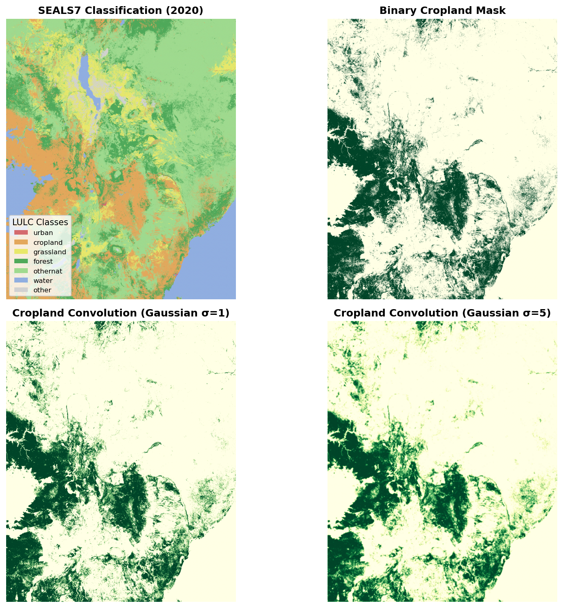
3. Coarse Change
Significance: Extracts and processes land-use change projections from global coarse-resolution models (e.g., LUH2) for the Kenya region.
What it does:
- Coarse Extraction: Clips global projection data to Kenya’s bounding box and selected year
- Coarse Simplified Proportion: Calculates proportions of each SEALS7 class
- Coarse Simplified Ha: Converts proportions to hectares
- Ha Difference: Calculates change in hectares between time periods (e.g., 2035 → 2050)
Key Output Example:
intermediate/coarse_change/coarse_simplified_ha_difference_from_previous_year/
└── ssp2/rcp45/luh2-message/bau/2050/
├── cropland_2050_2035_ha_diff_ssp2_rcp45_luh2-message_bau.tif
├── forest_2050_2035_ha_diff_ssp2_rcp45_luh2-message_bau.tif
└── ...Significance:
- Links exogenous global scenarios (SSP2, RCP4.5) to local allocation
- Tracks changes over time (2035 baseline → 2050 projection)
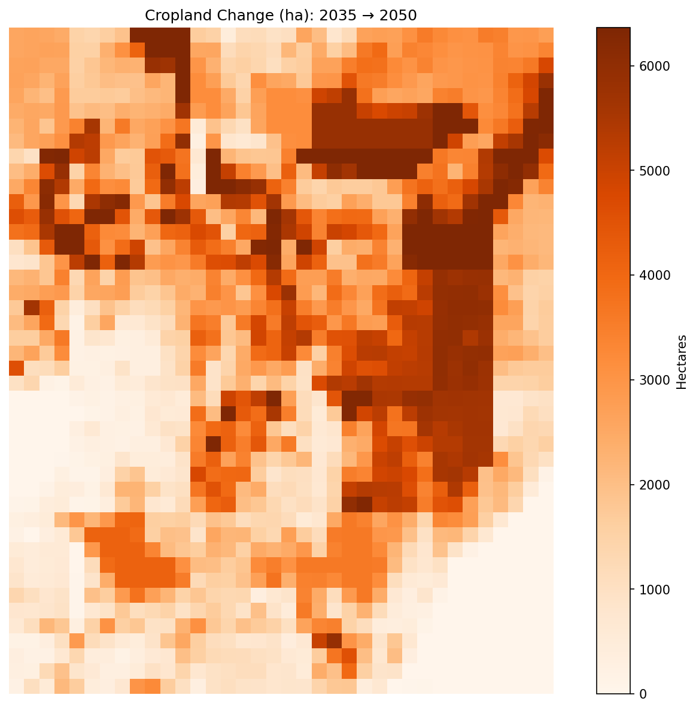
4. Regional Change
Significance: Adjusts coarse-resolution changes using regional covariates to account for local constraints and opportunities.
What it does:
- Creates a region ID map dividing AOI into separately shocked zones
- Applies various algorithms (e.g., proportional, covariate sum shift) to downscale from regional to coarse
Key Outputs:
intermediate/regional_change/
├── region_ids.tif # Regional zone identifiers
└── ssp2/rcp45/luh2-message/LP/2050/
└── cropland_2050_2035_ha_diff_ssp2_rcp45_luh2-message_LP_covariate_sum_shift.tifSignificance:
- Accounts for local factors (infrastructure, topography, current land use)
- Bridges the gap between coarse change and regional change
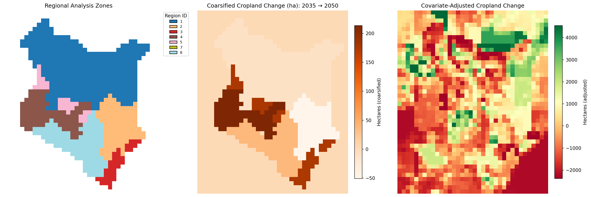
5. Allocations
Significance: Performs the core SEALS allocation, distributing coarse-resolution changes to fine-resolution pixels based on suitability.
What it does:
- Divides Kenya into allocation zones (e.g., zone 213_84)
- For each zone, runs an allocation algorithm that:
- Considers spatial covariates (convolutions, distance, etc.)
- Respects constraints (protected areas, water bodies)
- Tracks cumulative change
- Produces new LULC maps for each scenario and year
Key Output Structure:
intermediate/allocations/ssp2/rcp45/luh2-message/bau/2050/
└── allocation_zones/213_84/allocation/
├── block_ha_per_cell_coarse.tif # Coarse resolution for this block
├── cumulative_change_happened.tif # Tracking allocated changes
└── lulc_esa_seals7_ssp2_rcp45_luh2-message_bau_2050.tif # New LULCSignificance:
- This is the core of SEALS, where changes actually get placed on the landscape
- Allocation uses machine learning and optimization to find the “best” locations
- Results are spatially explicit: you can see exactly where cropland expanded
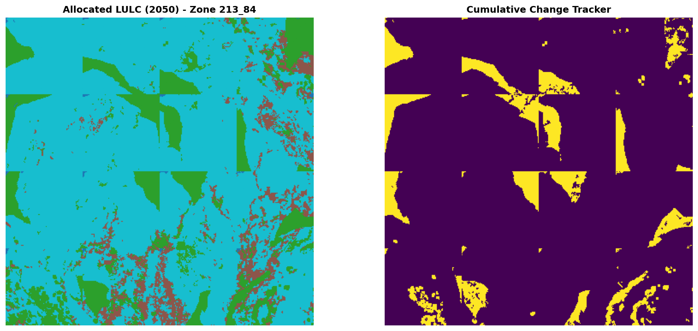
6. Stitched LULC Scenarios
Significance: Combines all allocation zones back into complete Kenya-wide LULC maps for each scenario.
What it does:
- Stitches together individual allocation blocks
- Clips to exact Kenya boundary
- Generates outputs for all scenario combinations (bau, enablers, es_index, LP, FP, LP+FP)
Key Outputs:
intermediate/stitched_lulc_simplified_scenarios/
├── lulc_esa_seals7_ssp2_rcp45_luh2-message_bau_2050.tif
├── lulc_esa_seals7_ssp2_rcp45_luh2-message_LP_2050.tif
├── lulc_esa_seals7_ssp2_rcp45_luh2-message_FP_2050.tif
├── lulc_esa_seals7_ssp2_rcp45_luh2-message_LP+FP_2050.tif
└── lulc_esa_seals7_ssp2_rcp45_luh2-message_LP+FP_2050_clipped.tifSignificance:
- Provides complete LULC projections
- Enables comparison across scenarios
- Serves as input to ecosystem service models (InVEST)
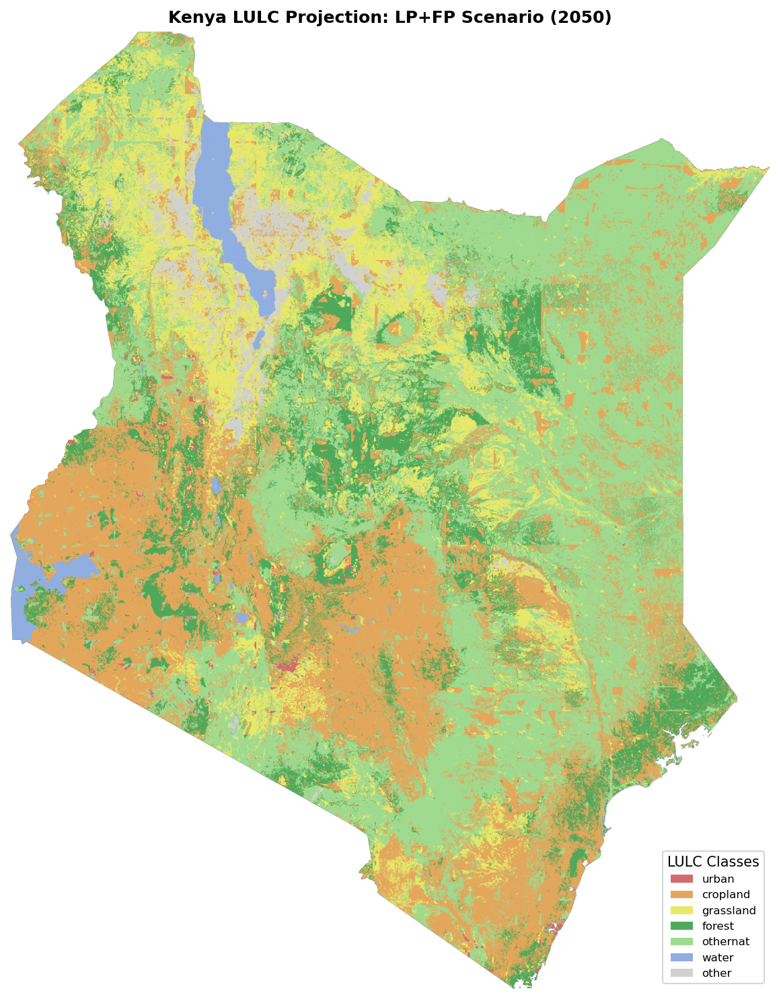
7. Visualization
Significance: Creates publication-quality PNG images of LULC projections for easy viewing and sharing.
What it does:
- Renders each stitched LULC raster as a PNG
- Applies consistent color schemes
- Adds appropriate labels and legends
Key Outputs:
intermediate/visualization/lulc_pngs/
├── lulc_esa_seals7_ssp2_rcp45_luh2-message_bau_2050.png
├── lulc_esa_seals7_ssp2_rcp45_luh2-message_LP_2050.png
└── lulc_esa_seals7_ssp2_rcp45_luh2-message_LP+FP_2050.png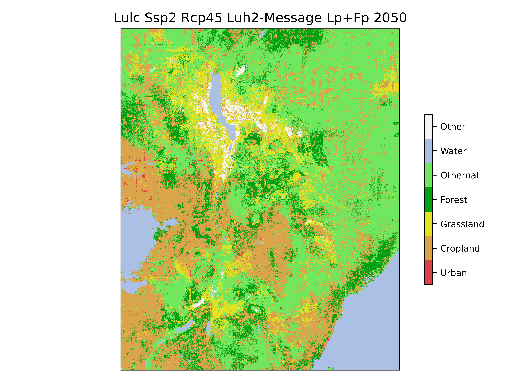
8. InVEST Modules
Significance: Calculates ecosystem service values using Natural Capital Project’s InVEST models.
8.1 Reproject to Equal Area
Converts LULC maps to equal-area projection (required for accurate area-based calculations).
intermediate/reproject_lulc_rasters_to_equal_area/
└── lulc_esa_seals7_ssp2_rcp45_luh2-message_LP+FP_2050.tif8.2 Carbon Storage
Estimates above- and below-ground carbon stocks using the InVEST Carbon model.
Key Output:
intermediate/run_invest_carbon/
└── esa_seals7_ssp2_rcp45_luh2-message_LP+FP_2050/
└── c_storage_bas.tif # Carbon storage (Mg C/ha)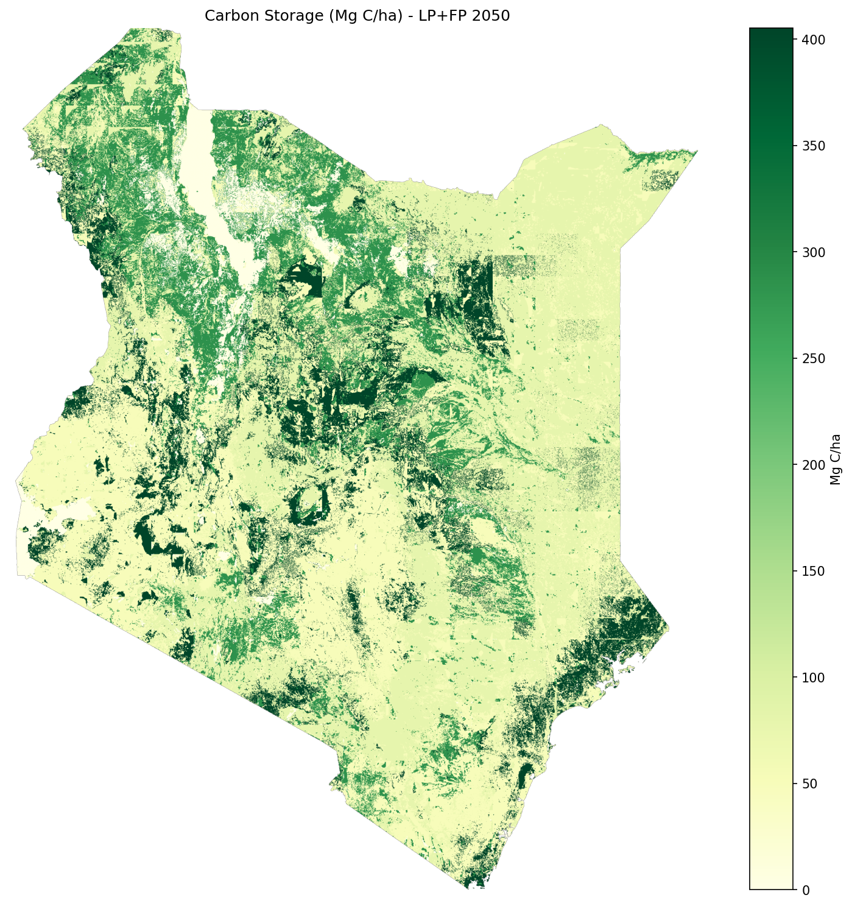
8.3 Pollination
Models pollinator abundance and crop pollination dependency using InVEST’s Pollination model.
Key Output:
intermediate/run_invest_pollination/
└── esa_seals7_ssp2_rcp45_luh2-message_LP+FP_2050/
└── total_pollinator_abundance_summer.tif # Pollinator index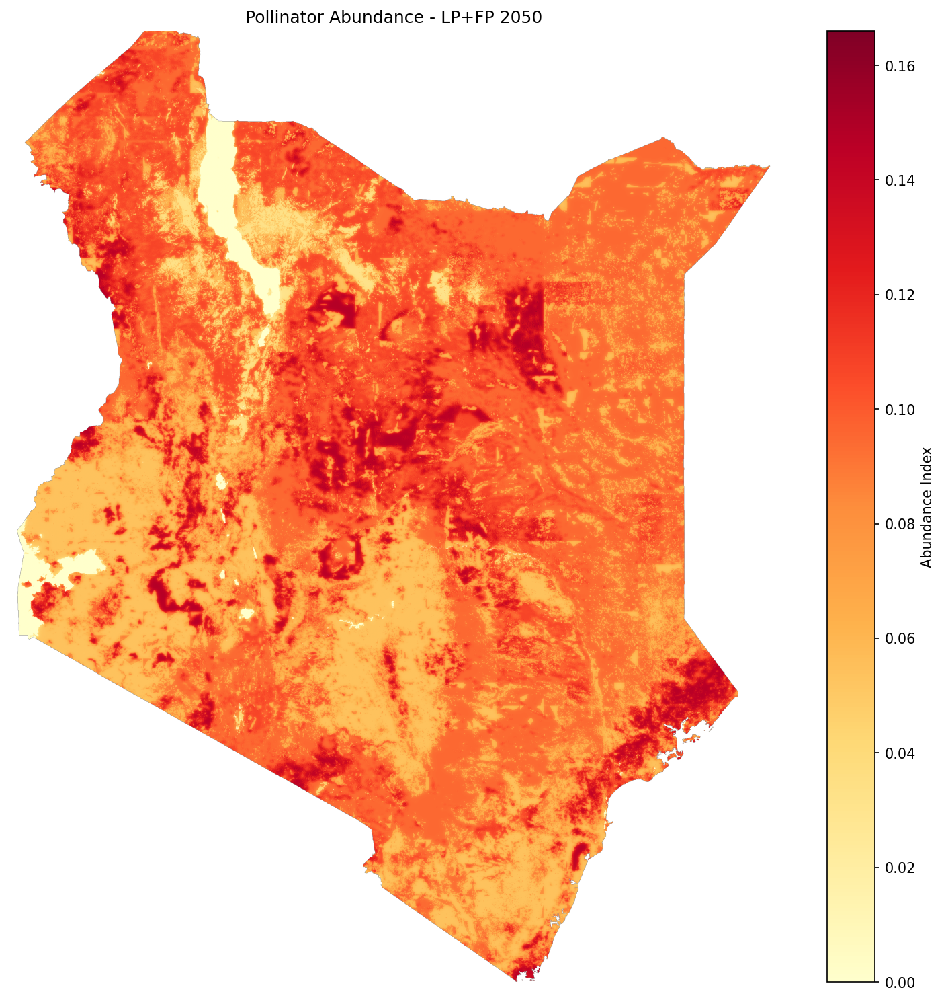
8.4 Crop Value and Pollination Shocks
Calculates agricultural value and applies DEMETRA economic shocks based on pollination changes.
What it does:
- Baseline crop value: Combines production data from all crops weighted by pollination dependency
- Maximum potential loss: Calculates loss if pollination disappeared completely
- Pollination sufficiency threshold: Uses 0.3 as the critical threshold
- Adjusted crop value: For each scenario:
- If below threshold → apply proportional loss
- If at or above threshold → maintain baseline value
- Regional shocks: Calculates
shock_value = scenario_value / baseline_valueby region
Key Outputs:
intermediate/calculate_crop_value_and_shock/
├── crop_value_baseline.tif # Baseline crop value ($/ha)
├── crop_value_max_lost.tif # Maximum possible loss ($/ha)
├── crop_value_adjusted_baseline_2020.tif # Adjusted baseline
├── crop_value_adjusted_esa_seals7_ssp2_rcp45_luh2-message_LP+FP_2050.tif # Scenario
├── pollination_shocks_seals7_ssp2_rcp45_luh2-message.csv # Regional shock values
└── pollination_shocks_alt_seals7_ssp2_rcp45_luh2-message.csv # Alternative regionsSignificance:
- Translates ecological changes (pollination) into economic impacts
- Provides spatially explicit economic loss estimates
- Generates shock values for DEMETRA CGE model integration
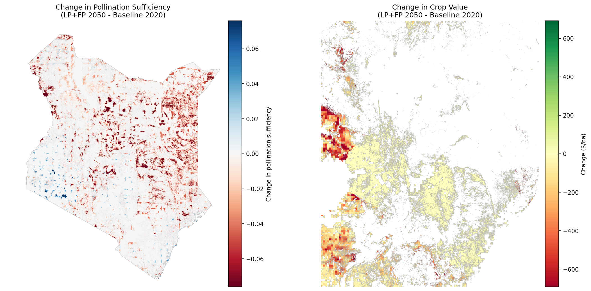
| Year | Region | Shock_Value |
|---|---|---|
| 2050 | AN | 0.86908 |
| 2050 | AS | 0.919913 |
| 2050 | CO | 0.921871 |
| 2050 | HR | 0.924216 |
| 2050 | MN | 0.924557 |
| 2050 | MO | 0.929781 |
| 2050 | MS | 0.977373 |
| 2050 | NA | 0.99532 |
8.5 Biodiversity Index
Calculates habitat quality and biodiversity index based on LULC patterns and biodiversity data (species ranges, endemic species ranges, key biodiversity areas, ecoregions). Not currently an official part of the InVEST ecosystem.
Key Output:
intermediate/calculate_biodiversity_index/
└── esa_seals7_ssp2_rcp45_luh2-message_LP+FP_2050/
└── esa_seals7_ssp2_rcp45_luh2-message_LP+FP_2050_index.tif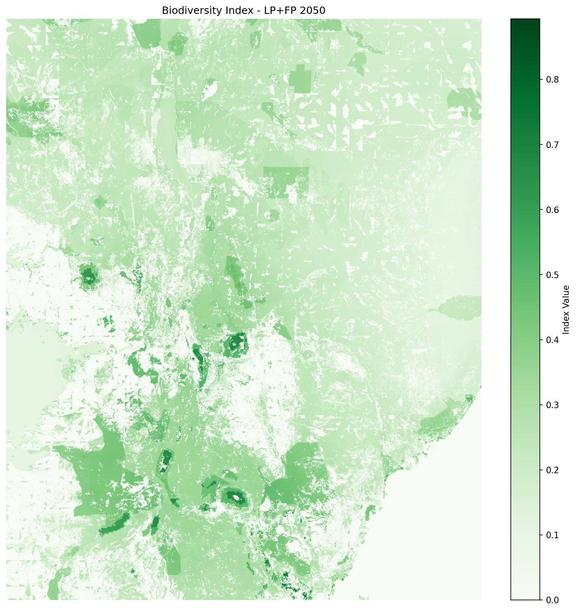
9. Summary and Visualization
Significance: Creates multi-panel comparison figures showing results across all scenarios and ecosystem services.
What it does:
- Compiles results from all InVEST modules
- Generates comparison figures across scenarios (bau, LP, FP, LP+FP, enablers, es_index)
- Creates summary visualizations for reports and presentations
Key Outputs:
intermediate/summarize_and_visualize_multi_vector/
├── biodiversity_combined/
│ └── esa_seals7_ssp2_rcp45_luh2-message_bau_biodiversity_combined.png
├── carbon_combined/
│ └── esa_seals7_ssp2_rcp45_luh2-message_es_index_carbon_combined.png
├── lulc_combined/
│ └── esa_seals7_ssp2_rcp45_luh2-message_enablers_lulc_combined.png
├── pollination_combined/
│ └── esa_seals7_ssp2_rcp45_luh2-message_es_index_pollination_combined.png
└── summary_visualizations/
└── summary_grouped_vertical_2050.png # Master summary figure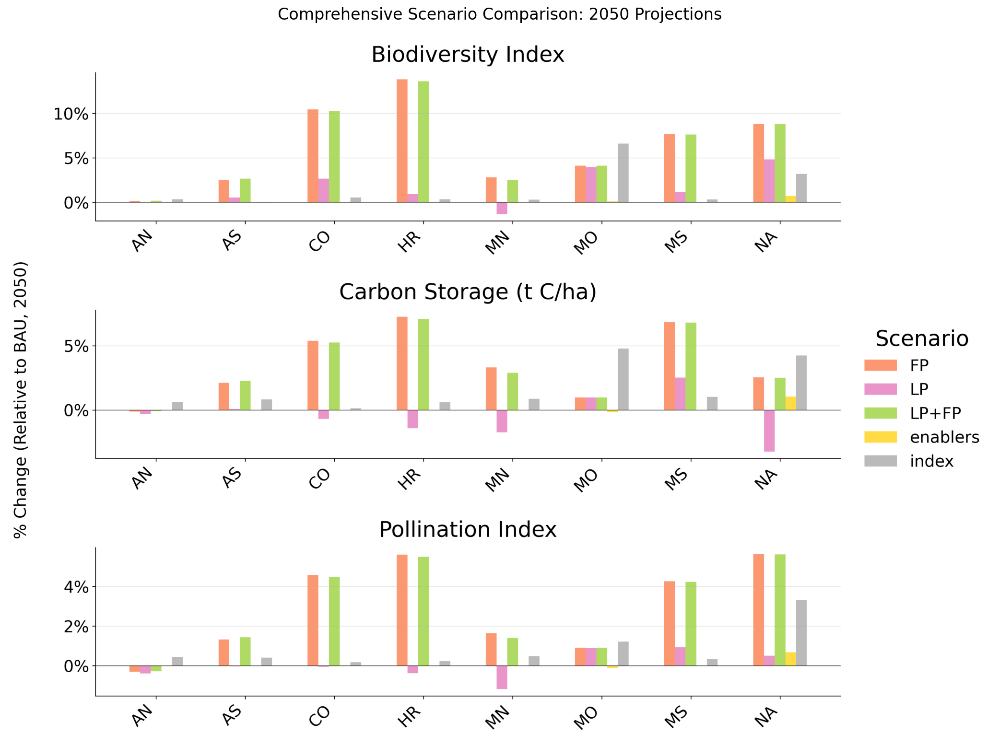
Final Outputs
Output files will be generated in:
<home>/Files/seals/projects/run_ken_demetra/Primary outputs include:
SEALS outputs:
- LULC geotiff files:
intermediate/stitched_lulc_simplified_scenarios/- Land-use/land-cover predictions for each scenario year
- LULC png files:
intermediate/visualization/lulc_pngs/- Spatial representation of land-use transitions
Project outputs:
- Figures:
intermediate/summarize_and_visualize_multi_vector/biodiversity_combinedcarbon_combinedcarbon_total_combinedlulc_combinedpollination_combinedsummary_visualizations
Additional Resources
- SEALS Repository: https://github.com/jandrewjohnson/seals_dev
- InVEST Documentation: https://naturalcapitalproject.stanford.edu/software/invest
- InVEST Python Documentation: https://invest.readthedocs.io/en/latest/index.html